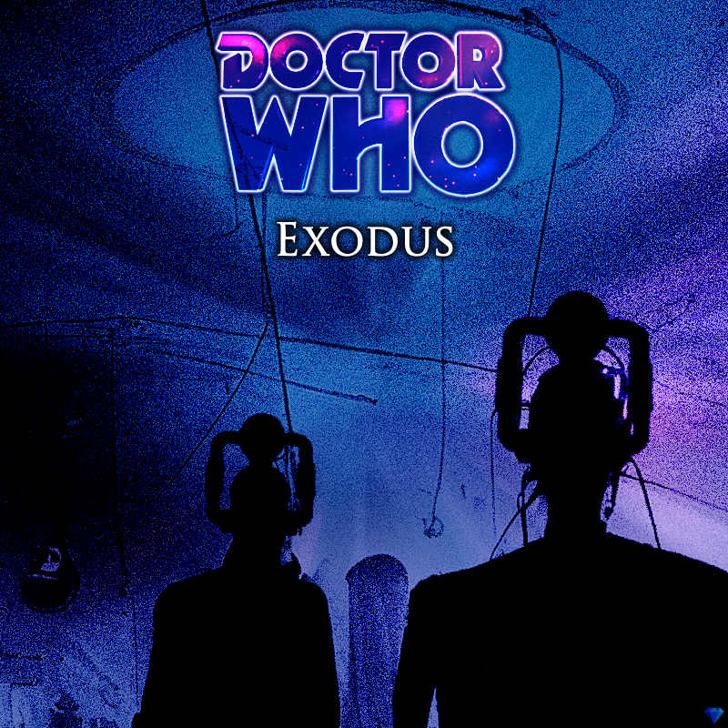

in: Episodes
Exodus
You may be looking for the planet of the same name

| Doctor | Fractal Doctor |
| Featuring | Cybermen |
| Previous | The Rest of Eternity |
| Next | Employee of the Month |
Exodus is the only adventure of the Solo Doctor.
Story
Wanting to live his life to the fullest, the Solo Doctor decides to fax his old enemy, the Master. The two Time Lords agree to put aside their usual differences for one night of passion, playing Mario Kart Wii.
Six games into their tournament, the Master is winning. However, as the night draws to an end, the Doctor begins to regenerate. He attempts to hold it off for one more race, but the force of regeneration is too strong for him to stop it. The magnitude of the blast rips through the room and obliterates the Master's Wii console.
Realising the damage, the new Doctor runs into his TARDIS and escapes as the Master wakes up and vows revenge on him.
Cast
Continuity
Behind the Scenes